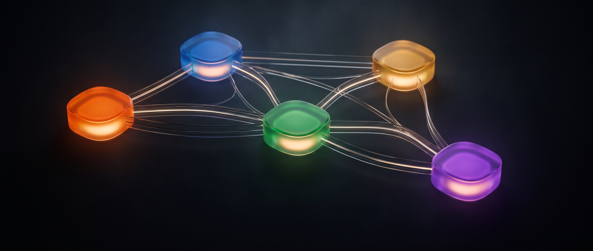
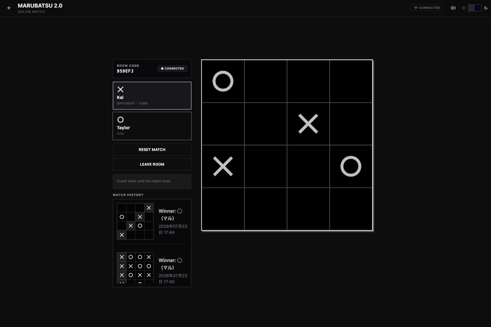
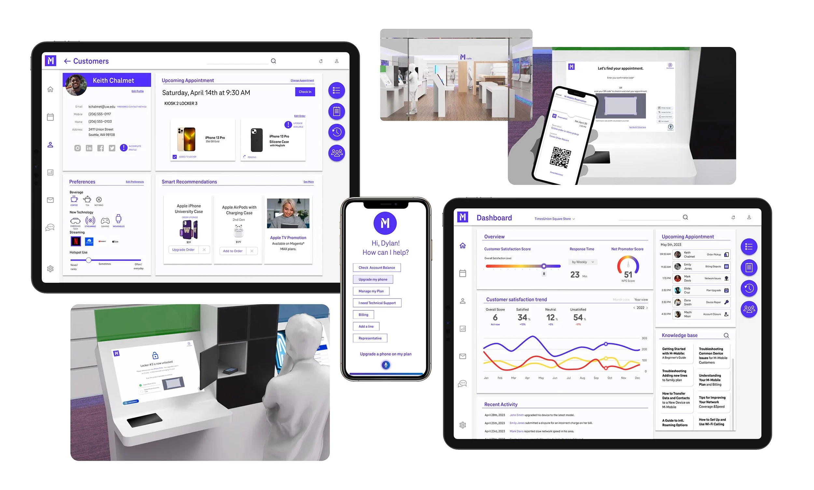
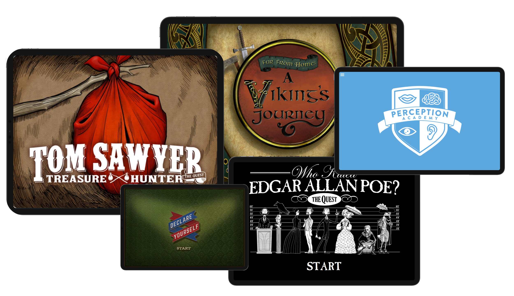
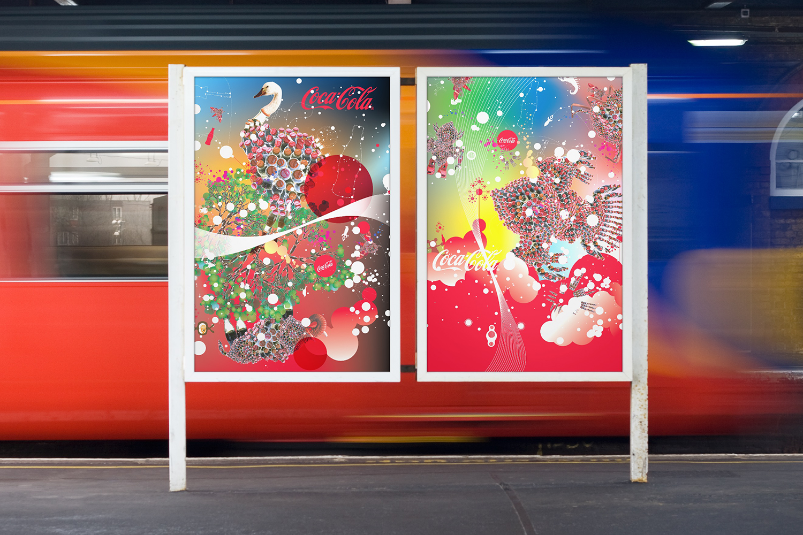

Twenty years of shipped work, now pointed at agentic systems. 20年の実装を、いまエージェント型システムに。
Six projects, one per screen. Scroll. 6件を、1画面に1件ずつ。スクロールしてください。

Verizon Value — Agentic UX
A fleet of ten agents inside a six-brand design team6ブランドのデザインチームに、10体のエージェント
Knowledge management, edge-case detection, CX strategy, writing evaluation — built for the 42 designers who actually had to use them.ナレッジ管理、エッジケース検出、CX戦略、ライティング評価。実際に使う42名のデザイナーのために作りました。

Creativity Is Everywhere — PlayableCreativity Is Everywhere ／ 触れる
Four things you can open right nowいますぐ開ける4つ
Typespace, Rakugaki Jam, Resona, Marubatsu Arena. No install, no signup — the argument I do not have to make in words.Typespace、Rakugaki Jam、Resona、Marubatsu Arena。インストールも登録も不要。言葉で説明しなくていい主張です。

T-Mobile — Lead UX, 2024
The digital experience used to end where the physical one beganデジタルの体験は、物理の体験が始まる場所で途切れていた
App, kiosk, locker and voice AI stitched into one handoff. The work led T-Mobile to select Concentrix Catalyst as a preferred innovation partner.アプリ、キオスク、ロッカー、音声AIを一本の受け渡しに。この仕事が、T-Mobile による Concentrix Catalyst の優先イノベーションパートナー選定につながりました。

Kitadoko — Creative DirectorKitadoko ／ クリエイティブディレクター
A 150-year-old barbershop with zero repeat customers創業150年、リピーターゼロの理容店
Underground, invisible from the street, 90% male. I started with the business model, not the aesthetics — bootcamp with the CEO, journey mapping, then identity and space.地下にあり通りから見えず、客の9割が男性。美意識ではなくビジネスモデルから始めました。経営者とのブートキャンプ、ジャーニーマップ、その後にアイデンティティと空間。

Amplify Education — 2014–2025
Eleven years with one client同じクライアントと11年
Ready-to-run immersive quest modules with AR built in, so the average teacher could deliver what only the best ones could before.ARを組み込んだ、そのまま使える没入型クエスト。優秀な教師にしかできなかったことを、すべての教師ができるように。

The Coca-Cola Company — OgilvyThe Coca-Cola Company ／ Ogilvy
Two visual systems for the most recognised brand there is世界で最も知られたブランドに、2つのビジュアルシステム
Global visual directions under VP of Design David Butler, deployed across international markets — billboards, vehicles, packaging, environments.デザイン担当副社長 David Butler の体制下でのグローバルビジュアルディレクション。屋外広告、車両、パッケージ、空間まで各国市場へ展開。